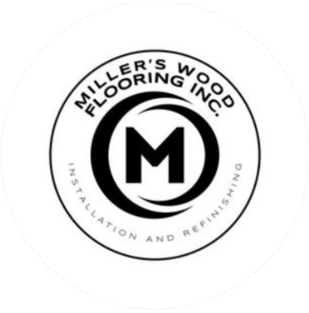

 Miller's Wood Flooring
Welcome to Miller's Wood Flooring, where we specialize in breathing new life into hardwood floors through our expert resurfacing services. With our skilled team and attention to detail, we transform worn-out floors into stunning masterpieces that enhance the beauty of your space.
From scratches and stains to signs of wear, our hardwood floor resurfacing process is designed to revitalize your floors, restoring their natural elegance and charm. Our experienced professionals assess the condition of your floors, providing personalized solutions tailored to your needs and preferences.
Along with our vast range of experience and using state-of-the-art equipment and techniques, we refinish your older worn-out floors, or perhaps you may just want to replace it completely. Miller's Hardwood Flooring has all of your hardwood flooring needs covered!
At Miller's Wood Flooring, we believe in the power of exceptional craftsmanship. We take pride in every project we undertake, ensuring meticulous attention to detail and delivering results that exceed your expectations. Our commitment to quality extends to our choice of eco-friendly products and practices, ensuring a sustainable and healthy environment.
Miller's Wood Flooring has been serving Ottawa and the region since 2019, and customer satisfaction is at the heart of our business. We strive to provide exceptional customer service, from the initial consultation to the final inspection. We work closely with you, listening to your vision and providing expert guidance to bring your hardwood floor dreams to life.
Discover the transformational possibilities of hardwood floor resurfacing with Miller's Wood Flooring. Whether it's a residential or commercial space, our team is ready to showcase our expertise, professionalism, and dedication to delivering the highest quality results.
Contact us today to schedule a consultation and let us uncover the hidden beauty of your hardwood floors.